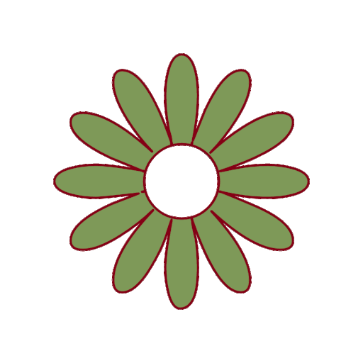

Todo sobre los cactus, las plantas de moda en decoración
Estarás de acuerdo con nosotros en que si hay una vegetación que actualmente está de moda, ésta son los cactus. Pues, ¿quién no tiene una de estas plantas en casa, en el jardín o en la oficina?
Y, aunque no sea así, estamos totalmente seguros de que las tiendas especializadas o los centros de jardinería de tu ciudad, tendrán alguno en la puerta o en el escaparate. Pero ¿por qué tanta popularidad?
La respuesta es muy simple: su facilidad de cultivo, su bajo mantenimiento y el gran número de variedades y tipos disponibles. Sus características han convertido a estas plantas suculentas en todo un fenómeno de masas.
Dada su enorme importancia en la decoración, no hemos querido desaprovechar la oportunidad de hablarte de estas plantas crasas tan especiales.
Si sigues leyendo, descubrirás las características más importantes de los cactus, los tipos que hay y las variedades más comunes. Seguro que cuando termines con la lectura querrás acudir a una tienda a comprar una de estas plantas.
¡Vamos con ello!
Vamos a despertar tu curiosidad empezando con un de los cactus más peculiares que hay hoy en día.
Lithops, un cactus curioso
Lithops, también conocido como planta piedra o planta viva, es el claro ejemplo de cómo una especie es capaz de adaptarse al medio en el que vive. Como podrás suponer por su nombre común, este cactus ha adoptado la forma de piedra y la razón no es otra que su objetivo de protegerse contra los animales.
¡Instinto de supervivencia!
Los Lithops se desarrollan formando grupos de dos hojas acopladas, divididas en el medio por una fisura. De esta pequeña ranura crecen las flores, que pueden ser de diferentes colores. Con superficie planta, estos cactus pueden tener forma cónica o cilíndrica.
Florecen durante el otoño.
Las flores de las plantas piedra son de hábito nocturno, parecidas a las margaritas (aunque más grandes) y desprenden una ligera fragancia. De cada uno de los cactus sólo crece una única flor.
Se desarrollan muy bien en espacios de mucha luz solar directa.
No se deben regar en verano y no tolera los encharcamientos de agua (un exceso puede provocar la pudrición). Deja que pasen varios días entre riego y riego. A la hora de regar, guíate por la humedad de la tierra y las condiciones meteorológicas.
Los Lithops pueden cultivarse en maceta, de hecho, fuera de su entorno natural, se recomienda ubicarlos en maceta dentro del hogar.
Echinocactus grusonii
Uno de los cactus más populares es el Echinocactus grusonii, conocido comúnmente como Cactus erizo o Asiendo de la suegra, es originario de México. Aunque es una de las plantas suculentas más cultivadas del mundo, está en peligro de extinción en su hábitat natural.
Es el fiel representante de los cactus de espina.
Tiene forma de barril y cuenta con unas areolas muy marcadas, una tonalidad verde muy viva y unas costillas muy prominentes. Sus espinas son fuertes, redondas y pueden presentar un color amarillo o rojizo.
El cactus erizo florece en verano.
Sus flores pueden ser de dos colores (rojas y amarillas), están situadas en las areolas superiores de los ejemplares adultos y son capaces de durar hasta 3 días.
¿Y es fácil de cuidar?
Una de las razones de su popularidad es su bajo mantenimiento. Al igual que casi todas las plantas crasas, el Echinocactus grusonii no requerirá muchos cuidados para sobrevivir. Lo que debes saber es lo siguiente:
Necesita estar ubicado en un espacio muy soleado (es una planta de desierto). Lo habitual es colocarlo en terrazas, balcones y en el jardín.
No sobrevive las heladas.
Prefiere suelos formados por mantillo de hojas y arena gruesa.
Puede plantarse en maceta o directamente en la tierra del jardín (ubicación c o exterior).
El riego dependerá del clima y de la estación del año. En verano será suficiente con 1 o 2 veces por semana, el resto del año cada 15 días y en invierno lo mejor es hacerlo una vez al mes.
Se multiplica por semillas.